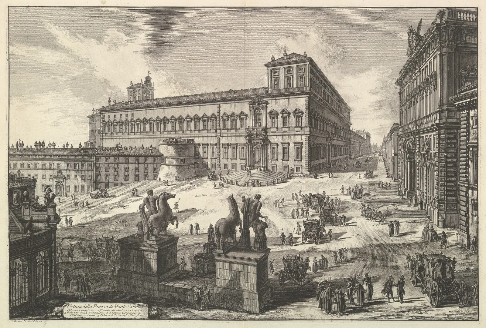
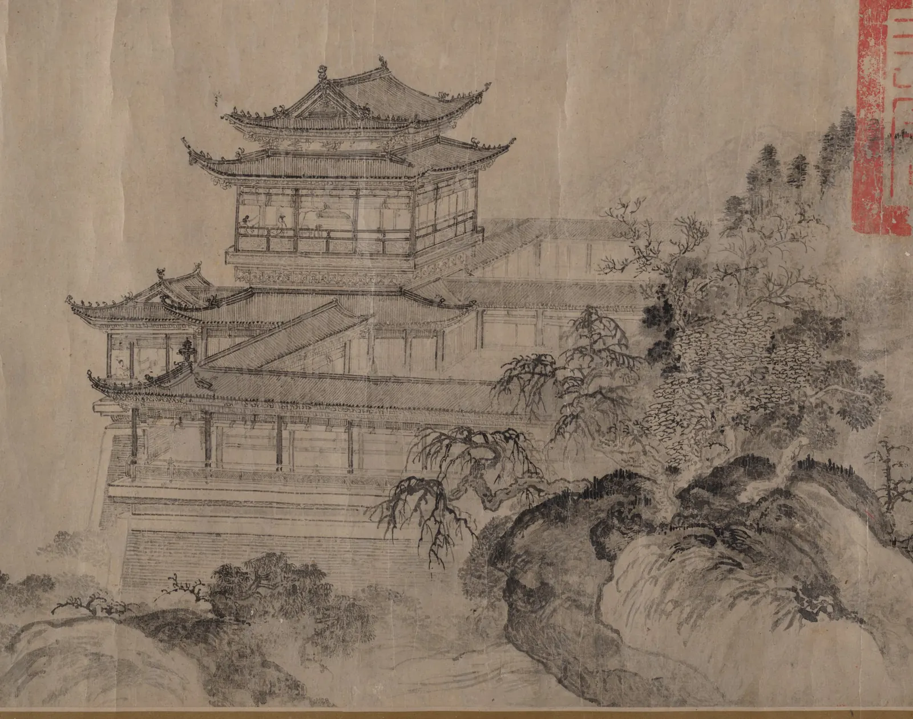

2점·3점 투시
길모퉁이에 선 건물을 떠올려 보자. 정면에서 보면 벽 하나가 반듯한 직사각형으로 서 있지만, 모퉁이를 마주하고 서면 벽 두 개가 양쪽으로 비스듬히 물러난다. 왼쪽 벽의 창문 줄은 왼쪽 어딘가로, 오른쪽 벽의 창문 줄은 오른쪽 어딘가로 모인다. 소실점이 둘이 된 것이다. 이 장은 그 두 소실점이 아무 데나 찍히는 점이 아니라 서로 묶인 한 쌍이라는 것, 둘을 너무 가깝게 찍으면 건물이 뱃머리처럼 찌그러지는 이유, 그리고 소실점이 종이 밖으로 나갈 때 쓰는 요령을 다룬다. 끝으로 탑을 올려다보면 생기는 셋째 소실점까지 간다.
- 상자를 돌리면 두 소실점이 어떻게 함께 움직이는지, 1점 투시가 2점 투시의 한 끝이라는 것을 안다.
- 두 소실점의 간격이 보는 거리를 정한다는 것을 이해하고, 90° 원과 60° 시야 원으로 찌그러짐을 미리 점검한다.
- 측정점으로 물러나는 벽을 실제 길이대로 나누고, 같은 간격으로 어림하면 왜 틀리는지 본다.
- 종이 밖의 소실점을 비례 사다리로 다루고, 계단·경사로의 경사 소실점을 찾는다.
- 3점 투시의 셋째 소실점과, 세로선을 일부러 세우는 관습, 소실점 없이 그린 동아시아 계화의 공간을 함께 본다.
모퉁이를 마주하면 소실점이 둘이 된다
4장에서 본 1점 투시는 상자의 한 면이 그림면(눈앞에 세워 둔 투명한 유리판이라고 생각하면 된다)과 나란할 때의 그림이었다. 그 면의 가로선은 그림에서도 수평으로, 세로선은 수직으로 남고, 눈에서 곧장 멀어지는 모서리만 수평선 위의 한 점으로 모였다. 이제 상자를 바닥 위에서 조금 돌려 본다. 그 순간 그림면과 나란하던 가로선도 그림면에서 비스듬히 멀어지기 시작하고, 그 선들도 자기 소실점을 갖는다. 서로 직각인 두 방향의 수평 모서리가 각자의 소실점으로 모이는 그림을 2점 투시(Two-point perspective)라고 한다. 세로 모서리는 여전히 그림면과 나란하므로 수직으로 남는다.
아래 상자를 좌우로 끌어 돌려 본다. 위아래로 끌면 눈높이가 바뀐다. 빨간 점선은 한 방향의 모서리를, 파란 점선은 그와 직각인 방향의 모서리를 연장한 것이다.
상자를 돌리면 소실점이 둘이 된다
상자를 돌리는 동안 두 소실점은 따로 움직이지 않았다. 한쪽이 가운데로 다가오면 다른 쪽은 멀리 달아났다. θ가 0이 되는 극단에서 한쪽은 화면 중심(4장의 1점 투시 소실점)에 닿고 다른 쪽은 무한히 멀어진다. 그래서 1점 투시와 2점 투시는 다른 규칙이 아니라 같은 규칙의 다른 각도다. 실제로 그림을 그릴 때 정면 벽이 그림면과 거의 나란하면 먼 쪽 소실점이 종이 몇 장 밖으로 나가는데, 그때는 그 방향의 선을 거의 수평으로 그리면서 아주 조금만 기울인다.
두 소실점은 한 쌍이다
두 소실점이 왜 함께 움직이는지는 위에서 내려다본 평면도에서 바로 보인다. 소실점은 "눈에서 그 방향으로 쏜 시선이 그림면에 닿는 점"이다. 평행한 선들은 아무리 멀리 가도 그 방향의 시선과 나란하므로, 그림에서는 모두 그 시선이 그림면을 뚫는 한 점으로 모인다. 상자의 두 모서리 방향은 직각이므로, 눈에서 그 두 방향으로 쏜 시선도 직각을 이룬다. 눈이 서 있는 자리를 정거점(Station point), 눈에서 그림면까지의 거리를 보는 거리(Viewing distance, f)라고 부른다.
그림 1에서 두 시선과 그림면은 직각삼각형을 이룬다. 그래서 두 소실점의 간격 D와 보는 거리 f 사이에 간단한 관계가 생긴다.
이 식을 거꾸로 읽는 것이 더 중요하다. 종이 위에 두 소실점을 찍는 순간, 화가는 자기도 모르게 보는 거리를 정한다. 두 소실점을 10 cm 간격으로 찍었다면 보는 거리는 아무리 길어도 5 cm다. 그 그림은 종이에 코를 대다시피 해서 볼 때만 맞는 그림이 된다. 이것이 다음 절의 찌그러짐이 생기는 이유다.
소실점이 가까우면 찌그러진다
소실점을 종이 안에 찍고 싶은 마음은 자연스럽다. 자를 대고 선을 긋기 편하기 때문이다. 그런데 두 소실점을 종이 폭보다 가깝게 찍으면 건물 모서리가 날카로운 쐐기처럼 튀어나오고, 바닥의 정사각형 타일이 마름모처럼 늘어진다. 원인을 그림 위에서 바로 확인하는 방법이 두 가지 있다.
첫째는 90° 원(Right-angle circle)이다. 두 소실점을 지름으로 하는 원을 그리면, 바닥에 놓인 직각 모서리는 원 안에서는 둔각으로, 원 위에서는 정확히 90°로, 원 밖에서는 예각으로 그려진다. 실제 직각이 그림에서 90°보다 뾰족하게 보이면 우리 눈은 그것을 직각으로 받아들이기 어렵다. 둘째는 시야 원(Cone of vision)이다. 사람의 눈이 고개를 돌리지 않고 무리 없이 보는 범위를 흔히 시선 둘레 60°(좌우로 30°씩)로 잡는다. 그림에서는 시선의 중심을 가운데로 하고 반지름이 f × tan 30°, 곧 보는 거리의 약 0.58배인 원이다. 이 원 밖으로 나간 부분은 기하학적으로 맞게 그려도 늘어져 보인다. 60°는 엄밀한 생리학적 한계가 아니라 투시도 교재들이 오래 써 온 실용 기준이다.
두 기준은 같은 이야기를 다르게 한다. 소실점 간격 D가 짧으면 보는 거리 f도 짧고, 90° 원도 시야 원도 작아진다. 그 작은 원 밖에 그림의 대부분이 놓이게 된다. 아래에서 두 소실점을 직접 끌어 간격을 바꿔 본다. 가운데 사각형이 종이의 그림 칸이고, 바닥에 놓인 정육면체(한 변 0.6 m)들은 모두 같은 크기다. 바닥 모서리가 90°보다 뾰족하게 그려진 상자는 붉게 칠해진다.
소실점 간격과 찌그러짐
소실점을 벌리면 찌그러짐이 사라진다. 이것을 거꾸로 말하면, 찌그러지지 않은 2점 투시를 그리려면 대개 적어도 한 소실점은 종이 밖에 있어야 한다는 뜻이다. 그림 칸 폭을 W라 할 때 그림 칸 전체가 60° 시야 원 안에 들어오려면 보는 거리가 W의 약 0.87배보다 길어야 한다(반폭 W/2가 f × tan 30° 이하). 앞의 식에 넣으면 두 소실점의 간격은 θ = 45°에서도 W의 1.7배 이상, θ = 30°이면 2배 이상이어야 한다. 많은 투시도 교재가 "소실점은 종이 밖에 멀리"라고 말하는 근거가 이것이다.
측정점으로 깊이 나누기
소실점을 정하고 나면 다음 질문이 따라온다. 정면 벽에 창문 다섯 개가 같은 간격으로 있다면, 물러나는 벽 위에서 그 간격을 어떻게 나누는가. 그림에서는 같은 간격이 먼 쪽으로 갈수록 점점 좁아지므로 자로 똑같이 나눌 수 없다. 4장에서는 바닥 타일의 대각선으로 깊이를 나눴다. 2점 투시에서는 측정점(Measuring point)이라는 도구를 더 자주 쓴다.
방법은 이렇다. 물러나는 벽의 가까운 모서리 바닥에서 수평으로 측정선(Measuring line)을 긋는다. 이 선은 그림면과 나란하므로 그 위에서는 실제 길이를 자로 잴 수 있다. 측정선 위에 1 m 간격의 눈금을 찍는다. 수평선 위의 측정점에서 각 눈금을 지나는 선을 그어 물러나는 바닥선과 만나게 하면, 그 교점들이 정확히 1 m씩 물러난 자리다. 측정점의 위치는 그 방향의 소실점에서 정거점까지의 거리만큼 수평선을 따라 떨어진 곳이다. 측정선과 바닥선, 측정점에서 그은 선이 실제 공간에서 이등변삼각형을 이루기 때문이다.
측정점으로 울타리 기둥 세우기
측정점은 처음 볼 때 마법처럼 보이지만, 하는 일은 단순하다. 그림면과 나란한 선 위에서 잰 길이를 깊이 방향으로 "돌려 놓는" 것이다. 측정점이 없으면 대각선으로 반씩 나누는 방법(4장)을 쓸 수 있지만, 그 방법은 2, 4, 8처럼 반으로 나누는 수에만 편하다. 측정점은 다섯 칸, 일곱 칸, 또는 3 m와 1.2 m가 섞인 불규칙한 간격도 한 번에 옮긴다. 실제 현장 스케치에서는 측정점을 작도하기보다 첫 칸을 눈으로 정한 뒤 대각선으로 이어 가는 경우가 많다. 다만 시뮬레이터에서 본 것처럼 "같은 간격으로 어림하기"는 칸이 늘수록 크게 틀린다.
종이 밖의 소실점
앞 절의 결론대로 소실점을 멀리 두면, 이번에는 소실점을 찍을 자리가 없다. 화가들이 쓰는 방법은 세 가지다. 종이 옆에 종이를 이어 붙이거나 책상 위에 테이프를 붙여 점을 찍는 방법, 긴 자나 실을 그 점에 고정해 쓰는 방법, 그리고 소실점 없이 같은 결과를 내는 비례 사다리(Proportional ladder)다. 첫째와 둘째는 소실점이 종이에서 한 뼘쯤 밖일 때 좋고, 몇십 cm 밖이면 셋째가 편하다.
비례 사다리는 닮은 삼각형을 이용한다. 건물 모서리의 윗선과 아랫선, 이 두 선만 소실점을 향해 정확히 그어 그림 칸 가장자리까지 연장한다. 그다음 모서리의 세로 길이와 가장자리의 세로 길이를 똑같이 몇 칸으로 나누고, 같은 번호의 눈금끼리 잇는다. 두 세로선이 같은 소실점을 향하는 두 선 사이에 끼어 있으므로, 같은 비율의 점들을 이은 선은 모두 그 소실점을 지난다. 창 윗선, 층 선, 처마 선을 이 사다리에 맞춰 그리면 된다.
비례 사다리: 소실점 없이 소실점으로 긋기
사다리의 핵심은 "가장자리 : 모서리" 비율이다. 소실점이 그림 칸 왼쪽 가장자리에서 33 cm 밖에 있고 건물 모서리가 가장자리에서 12 cm 안쪽에 있다면, 비율은 33 ÷ 45 ≈ 0.73이다. 모서리에서 높이 10 cm인 점은 가장자리에서 7.3 cm 높이로 옮긴다(높이는 수평선에서 잰다). 수평선 위의 점은 위로, 아래의 점은 아래로 같은 비율로 줄어든다. 수평선 자체는 비율과 상관없이 그대로다.
기울어진 면: 계단과 경사로
지금까지의 소실점은 모두 수평선 위에 있었다. 수평인 선들의 소실점이기 때문이다. 계단의 경사, 지붕의 비탈, 언덕길처럼 기울어진 선들은 수평선 밖의 소실점으로 모인다. 이것을 경사 소실점(Inclined vanishing point)이라고 부른다. 경사 소실점의 자리는 정해져 있다. 그 비탈을 위에서 내려다봤을 때의 방향, 곧 비탈의 평면 방향이 가진 소실점에서 똑바로 위나 아래로 올라간 세로선 위다. 올라가는 비탈이면 위로, 내려가는 비탈이면 아래로 간다.
아래는 골목 계단이다. 기울기를 바꿔 보고, 오르는 계단과 내려가는 계단을 바꿔 본다. 붉은 선은 계단 디딤판 앞 모서리를 이은 경사선, 초록 세로선은 바닥 소실점을 지나는 세로선이다.
계단의 경사 소실점
지붕도 같다. 박공지붕의 두 비탈은 같은 세로선 위에서 하나는 수평선 위로, 하나는 아래로 소실점을 갖는다. 비탈이 같으면 두 경사 소실점은 수평선에서 같은 거리만큼 위아래로 떨어진다. 그래서 박공지붕을 그릴 때는 경사 소실점을 하나 찾고 나면 반대 비탈의 소실점은 수평선에 대해 거울처럼 뒤집어 찍으면 된다. 경사 소실점을 쓰지 않고 그리려면, 박공의 꼭짓점을 벽 가운데의 세로선(벽에 X자 대각선을 그어 찾는다) 위에 먼저 정하고 양 끝을 이으면 된다.
3점 투시: 올려다본 탑
높은 탑을 올려다볼 때 고개를 젖히면 그림면도 함께 뒤로 기운다. 이제 세로선마저 그림면과 나란하지 않게 되고, 탑의 세로 모서리는 위쪽 어딘가의 셋째 소실점으로 모인다. 이것이 3점 투시(Three-point perspective)다. 내려다볼 때는 셋째 소실점이 아래에 생긴다. 고개를 젖히면 눈높이는 그대로인데 수평선이 그림 아래쪽으로 내려간다는 점도 함께 기억해 둔다. 수평선은 언제나 눈높이를 지나는 수평면의 자리이지, 그림의 가운데가 아니다.
올려다본 탑과 셋째 소실점
3점 투시는 높이를 극적으로 만든다. 그런데 건축 투시도나 건물 사진에서는 일부러 셋째 소실점을 없애고 세로선을 곧게 세우는 일이 많다. 위의 "세로선 세우기"가 그것이다. 엄밀히 말하면 우리 눈이 고개를 젖혀 본 모습과는 다르지만, 건물이 뒤로 넘어가는 것처럼 보이는 느낌을 피할 수 있고 그림 속 세로 길이를 비교하기 쉬워진다. 사람의 시각이 수직선에 특히 민감하다는 점, 그리고 그림을 볼 때는 보통 고개를 젖히지 않는다는 점이 이 관습을 뒷받침한다. 반대로 탑의 위압감이나 아찔한 높이가 주제라면 셋째 소실점을 살린다. 어느 쪽이 맞는지는 그림이 무엇을 전하려는가에 달렸다.
작품 속의 두 소실점, 소실점 없는 공간
18세기 이탈리아의 판화가이자 건축가 조반니 바티스타 피라네시(Giovanni Battista Piranesi)는 로마의 건물과 광장을 130점 남짓의 큰 에칭으로 새긴 연작 『로마의 풍경』(Vedute di Roma)을 남겼다. 아래는 그중 퀴리날레 궁전이 선 몬테 카발로 광장이다. 궁전 모퉁이를 비스듬히 바라본 전형적인 2점 투시다.

그림 위에 놓인 네 선의 양 끝을 끌어 궁전의 모서리선에 맞춘다. 붉은 두 선은 정면의 처마 선과 띠 장식, 파란 두 선은 옆면의 처마 선과 바닥선이다. 각 쌍이 만나는 곳이 소실점이다. 처음 놓인 선은 이 책이 큰 해상도의 사진에서 맞춰 둔 것이다.
피라네시의 궁전에서 소실점 찾기
피라네시의 시대보다 400년쯤 앞서, 중국에서는 건물을 자로 그리는 계화(界畫, Ruled-line painting)가 하나의 갈래로 자리 잡았다. 원나라 화가 당체(唐棣)의 「등왕각도」를 보면 누각의 기둥과 난간, 겹겹의 지붕이 놀랄 만큼 정밀한데, 물러나는 모서리들은 한 점으로 모이지 않고 거의 나란히 비스듬하게 올라간다. 이런 그림법을 평행 투영(Parallel projection)이라고 한다. 소실점이 없으니 먼 쪽의 기둥도 가까운 쪽과 같은 크기로 그려진다.

평행 투영을 "원근법을 몰라서 생긴 그림"으로 보는 것은 서양 중심의 오해다. 평행 투영은 오늘날에도 건축의 액소노메트릭 도면, 게임의 아이소메트릭 화면, 조립 설명서에서 쓰인다. 길이를 그대로 비교할 수 있고, 그림의 어느 부분도 다른 부분보다 특별하지 않기 때문이다. 2점 투시는 "한 사람이 한 자리에서 본 장면"을 약속하고, 평행 투영은 "누가 어디서 보아도 같은 사물"을 약속한다. 무엇을 그릴지가 아니라 무엇을 전할지가 둘 중 하나를 고르게 한다.
모퉁이 건물 세우기
마지막 시뮬레이터는 이 장의 도구를 모아 골목 모퉁이의 2층 건물을 세운다. 가운데 사각형이 가로 24 cm, 세로 18 cm의 그림 칸이다. 세 슬라이더로 소실점 간격, 정면 벽의 각도, 건물까지의 거리를 정한다. 건물 모서리를 좌우로 끌면 건물이 옆으로 옮겨 가고, 수평선을 위아래로 끌면 그림 칸 속 수평선의 높이가 바뀐다. 소실점이 그림 칸이나 캔버스 밖으로 나가면 가장자리에 화살표와 거리가 표시된다.
골목 모퉁이 서점 외관: 소실점 간격 정하기
두 안을 견주어 보면 이 장의 내용이 한 장면에 모인다. 소실점 간격은 보는 거리를 정하고, 보는 거리는 그림 칸이 시야 원 안에 드는지를 정한다. 소실점을 벌리면 그림은 자연스러워지지만 소실점은 종이 밖으로 나가므로, 테이프나 비례 사다리 같은 요령이 필요해진다. 그리고 같은 크기로 그리려면 실제로든 상상으로든 그만큼 물러서야 한다.
서윤의 작업 노트
소실점을 종이 밖으로 내보냈다
4월 첫 토요일, 서윤은 「골목 산책」의 첫 장면이 될 서점 외관을 그리러 골목 모퉁이에 섰다. 책방 E는 두 골목이 만나는 모퉁이의 2층 건물이다. 출입문과 간판이 있는 정면 벽이 왼쪽으로, 옆면이 오른쪽으로 물러난다. 서윤은 자로 선을 긋기 편하게 두 소실점을 스케치북의 그림 칸(가로 24 cm, 세로 18 cm) 양쪽 가장자리에서 2 cm씩 안쪽에 찍었다. 연필 구조선을 다 긋고 보니 건물이 뱃머리처럼 앞으로 튀어나와 있었다. 옥상 난간의 모서리는 직각보다 뾰족했고, 정면 벽의 창 줄이 왼쪽 끝에서 급하게 꺾여 내려갔다.
이 책의 모델로 계산하면 첫 스케치는 소실점 간격 20 cm(그림 칸 폭의 0.83배)라 보는 거리가 10 cm다. 이 그림은 높이 7.2 m 건물을 5.1 m 앞에서 본 그림이고, 옥상 모서리는 84.6°로 그려진다. 그림 칸의 좌우 끝은 시선에서 50° 밖으로, 60° 시야 원을 한참 넘었다. 한도경은 스케치를 보더니 서윤을 골목이 만나는 작은 삼거리 건너편까지 데리고 갔다. 모서리에서 약 13 m 떨어진 자리다. "가까이서 보면 다 보이는 것 같지만, 그림은 멀리서 봐야 한 장에 담긴다."
서윤은 그 자리에서 다시 구조선을 세웠다. 출입문과 간판이 있는 정면을 넓게 보이도록 정면 벽이 그림면과 30°를 이루는 쪽에서 보고, 소실점 간격은 60 cm(그림 칸 폭의 2.5배)로 잡았다. 보는 거리는 약 26 cm가 되고, 옥상 모서리는 130°, 바닥 모서리는 164°로 펴졌다. 그림 칸의 좌우 끝은 시선에서 24.8°, 옥상 모서리의 위쪽 끝은 23°로 모두 60° 시야 원 안이다. 그래서 세로선은 셋째 소실점 없이 곧게 세우기로 했다. 수평선은 그림 칸 아래에서 4.5 cm 높이에 두었다. 모서리 높이는 수평선 위 11 cm, 아래 3.15 cm다. 오른쪽(옆면) 소실점은 그림 칸 오른쪽 가장자리에서 3 cm 밖이라 스케치북 옆에 10 cm 폭의 종이 띠를 붙여 찍었다. 왼쪽(정면) 소실점은 왼쪽 가장자리에서 33 cm 밖이라 찍지 않고, 모서리와 왼쪽 가장자리를 여섯 칸씩 나눈 비례 사다리로 창 줄을 그었다. 가장자리 : 모서리 비율은 33 ÷ 45 ≈ 0.73이다. 도경은 사다리를 보고 웃었다. "나는 연필을 뻗어서 눈으로 각도를 재는데, 너는 자로 재는구나. 어느 쪽이든 소실점이 멀리 있다는 걸 알면 된 거야."
핵심 정리
- 서로 직각인 두 방향의 수평 모서리가 각자의 소실점으로 모이는 그림이 2점 투시다. 두 소실점은 늘 같은 수평선(눈높이) 위에 있고, 상자를 돌리면 함께 움직인다. 1점 투시는 그 한쪽 끝이다.
- 두 소실점의 간격 D는 보는 거리 f를 정한다. D = 2f ÷ sin 2θ이므로 D는 언제나 2f 이상이다. 소실점을 가깝게 찍으면 아주 가까이서 본 그림이 된다.
- 두 소실점을 지름으로 하는 90° 원 밖의 바닥 모서리는 예각으로 그려져 찌그러져 보인다. 그림 칸 전체를 60° 시야 원 안에 두려면 소실점 간격이 대개 그림 칸 폭의 2배 안팎 이상이어야 한다.
- 측정점은 측정선 위의 실제 길이를 깊이 방향으로 옮기는 정확한 작도다. 같은 간격으로 어림하면 먼 칸일수록 틀린다.
- 종이 밖의 소실점은 종이 띠·테이프·실로 찍거나, 두 선만 정확히 긋고 나머지는 같은 비율로 나누는 비례 사다리로 다룬다.
- 기울어진 선의 소실점은 그 평면 방향 소실점의 세로선 위에 있다. 고개를 젖히면 세로선이 셋째 소실점으로 모이는 3점 투시가 되지만, 세로선을 곧게 세우는 관습과 소실점 없는 평행 투영도 각자의 쓰임이 있다.
확인 퀴즈
1. 2점 투시로 건물을 그리면서 두 소실점을 그림 칸 안쪽에 가깝게 찍었더니, 건물 모서리가 직각보다 뾰족한 쐐기처럼 보였다. 가장 알맞은 설명은?
2. 2점 투시로 그린 상자를 바닥 위에서 천천히 돌려, 한 면이 그림면과 거의 나란해지게 했다. 두 소실점은 어떻게 되는가?
3. 골목 계단을 아래에서 올려다보며 2점 투시로 그린다. 계단 디딤판 앞 모서리를 이은 경사선들이 모이는 소실점은 어디에 있는가?
4. 고층 건물을 길에서 올려다보며 카메라를 위로 기울여 찍었다. 사진 속 건물의 세로 모서리는 어떻게 보이는가?